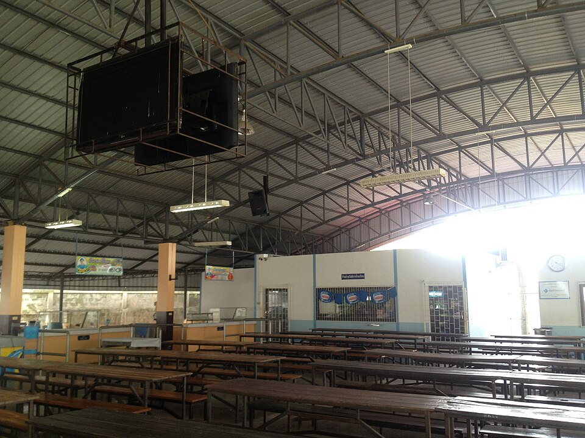

학교 급식실 (이미지) · 사진: Nakhungai / Wikimedia Commons, CC BY-SA 3.0
국제학교 학기 시작 준비물 — 교복·학용품·점심, 한국에서 사 가면 안 되는 것들
1. 교복 — 있는지 없는지부터, 그다음은 "어디서 사는가"
먼저 계열로 추측하지 마세요. 대체로 영국 국가교육과정을 따르는 학교와 영국계 재단 학교는 교복을 두는 경우가 많고, 미국식 학교나 일부 IB 계열 학교는 복장 규정만 두고 사복을 입는 경우가 많은 편으로 알려져 있습니다. 그런데 예외가 많습니다. 같은 학교 안에서도 초등과 중등 규정이 다른 경우가 있습니다. 합격 안내문에 적힌 것이 정답입니다.
교복이 있는 학교라면, 한국 학교와 다른 점이 셋 있습니다.
- 지정 업체에서만 삽니다. 학교가 지정한 업체나 교내 매장에서만 파는 경우가 많습니다. 비슷한 옷을 사 가셔도 쓸 수 없습니다.
- 사이즈를 재는 날이 정해져 있습니다. 방문 예약 기간이나 측정일이 따로 안내되는 경우가 많고, 학기 시작 직전에는 재고가 빠집니다. 특히 인기 사이즈가 그렇습니다.
- 품목이 여럿입니다. 평상 교복 외에 체육복·수영복·실내화·모자·가방이 별도로 지정되는 경우가 흔합니다. 햇볕이 강한 지역은 모자가 필수 품목인 학교도 있습니다.
참고로 "크게 사서 오래 입히기"는 교복이 있는 학교에서 잘 통하지 않습니다. 복장 규정에 맞는 착용 상태까지 적혀 있는 경우가 있기 때문입니다. 한 치수 정도면 몰라도, 두세 치수는 권하지 않습니다.
2. 학용품 — 목록은 학년마다 다릅니다
국제학교는 보통 학년별 준비물 목록(supply list)을 따로 내려 줍니다. 핵심은 같은 학교 안에서도 학년마다 다르다는 점입니다. 어떤 학년은 특정 규격의 공책이나 파일, 특정 색의 펜을 지정하고, 미술·과학에서만 쓰는 품목을 요구하기도 합니다.
그래서 한국에서 미리 사 가실 때는 범위를 좁히시는 편이 좋습니다.
| 품목 | 미리 사도 되나 | 이유 |
|---|---|---|
| 아이 손에 익은 필기구 | 예 | 규격 지정이 드물고 적응에 도움 |
| 공책·바인더·파일 | 아니요 | 규격·구멍 수가 나라마다 다름 |
| 계산기 | 목록 확인 후 | 시험에서 허용 모델이 정해져 있음 |
| 노트북·태블릿 | 목록 확인 후 | 운영체제 지정 + 현지 보증·수리 |
| 가방·물병 | 대체로 예 | 단, 교복 지정 가방이 있으면 제외 |
계산기 줄을 특히 봐 주세요. 고학년으로 갈수록 시험에서 쓸 수 있는 계산기 모델이 정해집니다. 한국에서 쓰던 것이 그대로 허용되지 않을 수 있으니, 수학 과목 안내를 받은 뒤에 사시는 것이 안전합니다. 기기 전반은 따로 정리해 두었습니다(→ 노트북·태블릿(BYOD)).
3. 점심 — 급식은 "학기 단위 신청"인 경우가 많습니다
한국 학교처럼 전교생이 같은 급식을 먹는 구조가 아닌 경우가 많습니다. 여기서 가장 자주 생기는 실수가 신청 시기를 놓치는 것입니다.
| 항목 | 한국 학교 | 국제학교에서 흔한 방식 |
|---|---|---|
| 기본 구조 | 전교생 급식 | 선택제(급식 또는 도시락) |
| 신청 단위 | 별도 신청 없음 | 학기·월 단위로 미리 신청 |
| 비용 | 학교를 통해 일괄 | 학비와 별도인 경우가 많음 |
| 알레르기 | 담임·보건실에 전달 | 서류로 제출 · 성분명으로 |
| 도시락 규칙 | 해당 없음 | 견과류 금지·전자레인지 없음 등 |
| 중간 변경 | 해당 없음 | 기간 중에는 어려운 경우가 있음 |
오른쪽 칸에서 가장 중요한 줄은 "알레르기"입니다. 한국에서 쓰던 제품 이름으로 적으면 현지에서 걸러지지 않습니다. 성분명으로 적어야 급식과 간식에서 걸러집니다. 이 부분은 건강 서류와 함께 처리하시는 것이 좋습니다(→ 입학 서류 속 건강·예방접종 기록).
그리고 도시락을 싸는 경우에도 학교 규칙을 먼저 보셔야 합니다. 전자레인지를 쓸 수 없어 식은 상태로 먹어야 하는 학교가 있고, 알레르기 때문에 견과류 반입을 금지하는 학교가 있으며, 냄새가 강한 음식을 피해 달라고 안내하는 학교도 있습니다. 아이가 "점심을 안 먹고 왔다"고 하면 입맛 문제가 아니라 구조 문제인 경우가 많습니다.
4. 자주 하는 오해 다섯 가지
- ① "한국에서 다 사 가면 싸게 끝난다." → 규격이 맞지 않아 다시 사는 경우가 많습니다. 목록을 받은 뒤에 사시는 편이 결과적으로 쌉니다.
- ② "교복은 크게 사면 오래 입는다." → 복장 규정에 착용 상태가 적힌 학교가 있습니다. 한 치수까지입니다.
- ③ "급식은 가서 신청하면 된다." → 신청 기간이 학기 전에 끝나는 경우가 있습니다. 놓치면 그 학기 내내 도시락입니다.
- ④ "물병·모자는 사소하다." → 더운 지역에서는 필수 품목으로 지정되고, 없으면 야외 활동에서 빠지게 되는 경우가 있습니다.
- ⑤ "작년 준비물 목록이면 충분하다." → 학년이 바뀌면 목록도 바뀝니다. 커뮤니티에서 받은 작년 목록은 참고용입니다.
5. 학기 시작 전 4단계 — 이 순서로만 하시면 됩니다
- 안내문을 한 장으로 모읍니다. 합격 통지와 함께 오는 안내는 보통 여러 통의 메일로 나뉘어 옵니다. 교복·준비물·급식·기기·통학을 한 장에 다섯 줄로 옮겨 적으세요. 여기서 빠지는 항목이 나중에 문제가 됩니다.
- 날짜가 있는 것부터 처리합니다. 교복 측정일, 급식 신청 마감, 기기 구입 기한, 서류 제출일. 물건보다 날짜가 먼저입니다(→ 학사 일정 읽는 법).
- 현지에서 살 것과 한국에서 가져갈 것을 나눕니다. 위 2번 표를 기준으로 하시면 됩니다. 기기는 거주할 나라에서 보증·수리가 되는지가 사양보다 중요합니다.
- 아이에게 하루 흐름을 설명해 줍니다. 점심을 어디서 어떻게 먹는지, 물병은 어디에 두는지, 체육이 있는 날은 무엇을 챙기는지. 준비물보다 이 설명이 첫 주를 편하게 만듭니다.
마지막으로 공부 쪽을 한마디만 덧붙이겠습니다. 학기 시작 전 몇 주는 가정에서 물건을 사는 데 시간을 다 쓰시는 시기입니다. 그런데 아이 입장에서 첫 달에 가장 힘든 것은 교복이 아니라 수업에서 쓰는 영어입니다. 지시어("분석하라"·"평가하라"·"근거를 들어 설명하라")와 과목별 용어가 그렇습니다. 준비물 목록을 정리하시는 김에, 아이에게는 학교에서 받게 될 과제의 말투를 미리 보여 주시면 첫 학기가 한결 수월해집니다(→ 숙제·과제 관리·EAL 영어 지원).
관련 검색어: 국제학교준비물 · 국제학교교복 · 국제학교급식 · 국제학교입학준비 · 주재원자녀학교준비
정리
국제학교의 학기 시작 준비는 물건을 사는 일이 아니라 날짜를 맞추는 일입니다. 교복은 지정 업체와 측정일, 학용품은 학년별 목록, 점심은 신청 단위와 마감이 핵심이고, 셋 다 학교마다 다릅니다. 한국에서 미리 사 두고 싶은 마음이 드시겠지만, 안내문을 받고 나서 사는 편이 결과적으로 싸고 빠릅니다. 그리고 준비물보다 아이에게 더 필요한 것은 첫 달에 쓸 영어입니다. 아이가 지금 어느 지점에서 막히는지 모르시겠다면, 30분 무료 수업으로 현재 위치부터 확인해 보시기 바랍니다. (교복 규정·급식 운영·준비물 목록은 학교마다, 해마다 다르니 반드시 학교 안내문을 직접 확인하세요.)